Solution:


In the circuit below, the voltage source is
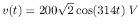,
and  ,
,  (rms value), and the total real power
consumption is 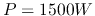. Find
(rms value), and the total real power
consumption is 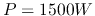. Find  ,
,  ,
,  and
and  .
.

Solution:
Represent voltage source  by phasor
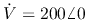, and the voltage
across the parallel branches (RC and RL) by 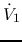, also represent the currents
by 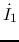,
by phasor
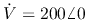, and the voltage
across the parallel branches (RC and RL) by 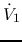, also represent the currents
by 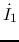,
 ,
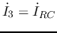.
,
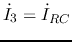.
Since
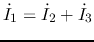, and 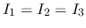, we know they form an
equilateral triangle, i.e.,
Since is in phase with
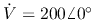, we have
In the circuit below,  ,
,  , 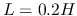,
, 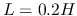,  .
The input voltage is
.
The input voltage is
 .
The system is in steady state before the switch is closed at
.
The system is in steady state before the switch is closed at  . Find voltage
. Find voltage
 across
across  and current
and current  through
through  for
for  .
.

Solution:
The phasor form of the input voltage is:
For  , the switch is closed,
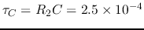,
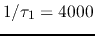,
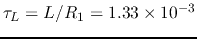,
, the switch is closed,
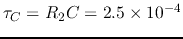,
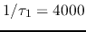,
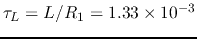,  .
As the steady state of
.
As the steady state of  is zero, we can find
is zero, we can find  to be
to be